Meine Filme
Neue Filme

Caillou - Weihnachten mit Caillou
Jahr: 2003 Dauer: 71
FSK: Auflösung: 1080p
Genre: Animation/Trick IMDB: 4.3/10

Die Schönsten Tierbabies - Doku
Jahr: 2009 Dauer: 89
FSK: Auflösung: 720p
Genre: Dokumentation IMDB: 0.0/10


I love Trouble - Nichts als Ärger
Jahr: 1994 Dauer: 113
FSK: 12 Auflösung: 720p
Genre: Action IMDB: 5.3/10


Die Schneekönigin 4: Im Spiegelland
Jahr: 2018 Dauer: 87
FSK: 6 Auflösung: 1080p
Genre: Komödie IMDB: 5.5/10

Jimmy Neutron: Der mutige Erfinder
Jahr: 2001 Dauer: 79
FSK: 0 Auflösung: 1080p
Genre: Action IMDB: 6.0/10


Eine Liebe für den Frieden - Bertha von Suttner und Alfred Nobel
Jahr: 2014 Dauer: 88
FSK: 12 Auflösung: 720p
Genre: Drama IMDB: 6.8/10
Kleine Ballerina - Ich lerne Ballett
Jahr: 1990 Dauer: 54
FSK: 0 Auflösung: SD
Genre: Dokumentation IMDB: 0.0/10
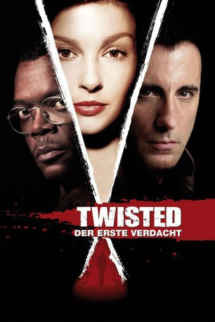
Twisted - Der erste Verdacht
Jahr: 2004 Dauer: 93
FSK: 12 Auflösung: 1080p
Genre: Thriller IMDB: 5.3/10
Twisted - Der erste Verdacht
Jahr: 2004 Dauer: 93
FSK: 12 Auflösung: 1080p
Genre: Thriller IMDB: 5.3/10

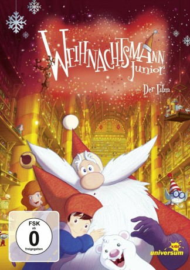
Weihnachtsmann Junior - Wie alles begann
Jahr: 2010 Dauer: 71
FSK: 0 Auflösung: 1080p
Genre: Komödie IMDB: 6.4/10
Weihnachtsmann Junior - Wie alles begann
Jahr: 2010 Dauer: 71
FSK: 0 Auflösung: 1080p
Genre: Komödie IMDB: 6.4/10

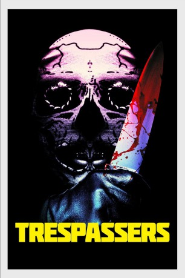
Hell Is Where the Home Is
Jahr: 2018 Dauer: 87
FSK: 18 Auflösung: 1080p
Genre: Thriller IMDB: 5.6/10
Hell Is Where the Home Is
Jahr: 2018 Dauer: 87
FSK: 18 Auflösung: 1080p
Genre: Thriller IMDB: 5.6/10
Thomas und seine Freunde - Dampfloks gegen Dieselloks
Jahr: 2011 Dauer: 57
FSK: Auflösung: 1080p
Genre: Animation/Trick IMDB: 5.5/10


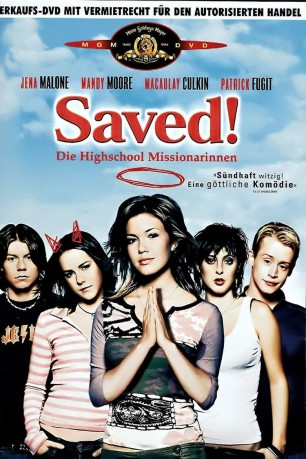
Saved! - Die Highschool-Missionarinnen
Jahr: 2004 Dauer: 88
FSK: 12 Auflösung: 1080p
Genre: Drama IMDB: 6.7/10
Saved! - Die Highschool-Missionarinnen
Jahr: 2004 Dauer: 88
FSK: 12 Auflösung: 1080p
Genre: Drama IMDB: 6.7/10


Der Honiggarten - Das Geheimnis der Bienen
Jahr: 2018 Dauer: 107
FSK: 12 Auflösung: 1080p
Genre: Drama IMDB: 5.9/10
Sixty Six - Eine fast wahre Geschichte
Jahr: 2006 Dauer: 89
FSK: Auflösung: 1080p
Genre: Drama IMDB: 6.7/10


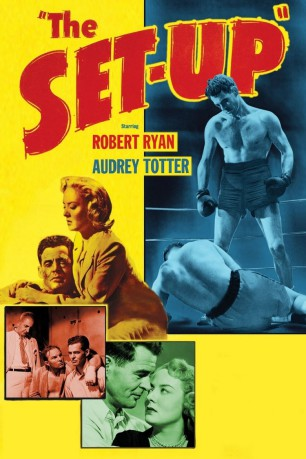
Ring frei für Stoker Thompson
Jahr: 1949 Dauer: 69
FSK: 12 Auflösung: 1080p
Genre: Krimi IMDB: 7.9/10
Ring frei für Stoker Thompson
Jahr: 1949 Dauer: 69
FSK: 12 Auflösung: 1080p
Genre: Krimi IMDB: 7.9/10

Die Prinzessin und der blinde Schmied
Jahr: 2018 Dauer: 78
FSK: 0 Auflösung: 720p
Genre: Komödie IMDB: 6.8/10

Was nützt die Liebe in Gedanken
Jahr: 2004 Dauer: 85
FSK: 16 Auflösung: 1080p
Genre: Drama IMDB: 7.1/10
Rise of the Footsoldier 4: Marbella *OmU*
Jahr: 2019 Dauer: 85
FSK: Auflösung: 1080p
Genre: Action IMDB: 5.0/10

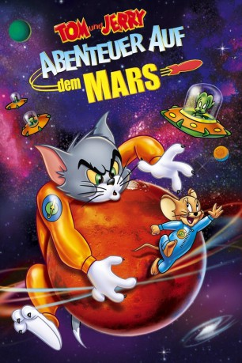
Tom und Jerry - Abenteuer auf dem Mars
Jahr: 2005 Dauer: 67
FSK: Auflösung: 1080p
Genre: Action IMDB: 6.0/10
Tom und Jerry - Abenteuer auf dem Mars
Jahr: 2005 Dauer: 67
FSK: Auflösung: 1080p
Genre: Action IMDB: 6.0/10
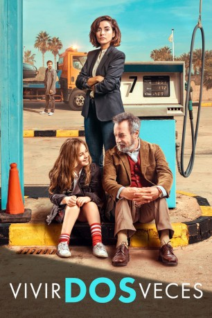
Lebe zweimal, liebe einmal
Jahr: 2019 Dauer: 101
FSK: 13 Auflösung: 1080p
Genre: Drama IMDB: 7.3/10
Lebe zweimal, liebe einmal
Jahr: 2019 Dauer: 101
FSK: 13 Auflösung: 1080p
Genre: Drama IMDB: 7.3/10


Im Norden strahlt der Weihnachtsstern
Jahr: 2018 Dauer: 80
FSK: 6 Auflösung: 1080p
Genre: Liebe IMDB: 6.7/10
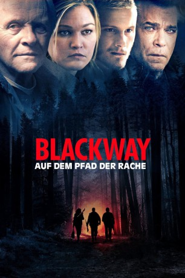
Blackway - Auf dem Pfad der Rache
Jahr: 2015 Dauer: 90
FSK: 16 Auflösung: 1080p
Genre: Thriller IMDB: 5.3/10
Blackway - Auf dem Pfad der Rache
Jahr: 2015 Dauer: 90
FSK: 16 Auflösung: 1080p
Genre: Thriller IMDB: 5.3/10

Tatort - Tschiller 6 - Tschill Out
Jahr: 2020 Dauer: 88
FSK: Auflösung: 720p
Genre: Thriller IMDB: 5.9/10

Das Märchen von den 12 Monaten
Jahr: 2019 Dauer: undefiniert
FSK: 0 Auflösung: 720p
Genre: Fantasy IMDB: 7.0/10
Benjamin Blümchen und der Weihnachtsmann
Jahr: 1992 Dauer: 45
FSK: 0 Auflösung: 1080p
Genre: Animation/Trick IMDB: 6.5/10


Maleficent 2: Mächte der Finsternis
Jahr: 2019 Dauer: 118
FSK: 12 Auflösung: 1080p
Genre: Abenteuer IMDB: 6.9/10
Langoliers - Die andere Dimension
Jahr: 1995 Dauer: 180
FSK: Auflösung: 720p
Genre: Thriller IMDB: 6.1/10

Le Mans 66: Gegen jede Chance
Jahr: 2019 Dauer: 152
FSK: 12 Auflösung: 1080p
Genre: Action IMDB: 8.3/10


Wallace & Gromit's Welt der Erfindungen
Jahr: 2010 Dauer: 29
FSK: Auflösung: SD
Genre: Komödie IMDB: 7.4/10
Zombieland 2: Doppelt hält besser
Jahr: 2019 Dauer: 99
FSK: 16 Auflösung: 1080p
Genre: Action IMDB: 7.0/10

Star Wars: Episode 9 - Der Aufstieg Skywalkers
Jahr: 2019 Dauer: 134
FSK: 12 Auflösung: 1080p
Genre: Action IMDB: 7.0/10


Furchtbar fröhliche Weihnachten
Jahr: 2014 Dauer: 70
FSK: 12 Auflösung: 1080p
Genre: Komödie IMDB: 5.1/10

Barbie Traumvilla Abenteuer Die Legende der Meerjungfrau
Jahr: 2019 Dauer: 78
FSK: 0 Auflösung: 1080p
Genre: Animation/Trick IMDB: 0.0/10

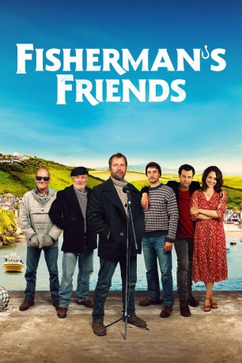
Fisherman's Friends - Vom Kutter in die Charts
Jahr: 2019 Dauer: 111
FSK: 0 Auflösung: 1080p
Genre: Drama IMDB: 6.9/10
Fisherman's Friends - Vom Kutter in die Charts
Jahr: 2019 Dauer: 111
FSK: 0 Auflösung: 1080p
Genre: Drama IMDB: 6.9/10


Barbie 21 Zauberhafte Weihnachten
Jahr: 2011 Dauer: 67
FSK: Auflösung: 1080p
Genre: Animation/Trick IMDB: 5.7/10


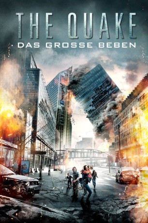
The Quake - Das große Beben
Jahr: 2018 Dauer: 108
FSK: 16 Auflösung: 1080p
Genre: Action IMDB: 6.2/10
The Quake - Das große Beben
Jahr: 2018 Dauer: 108
FSK: 16 Auflösung: 1080p
Genre: Action IMDB: 6.2/10


Stolz und Vorurteil & Zombies
Jahr: 2016 Dauer: 107
FSK: 16 Auflösung: 1080p
Genre: Action IMDB: 5.8/10
Die Unendliche Geschichte III - Rettung aus Phantasien
Jahr: 1994 Dauer: 91
FSK: 6 Auflösung: 1080p
Genre: Komödie IMDB: 3.2/10

Feedback - Sende Oder Stirb
Jahr: 2019 Dauer: 97
FSK: Not Rated Auflösung: 1080p
Genre: Thriller IMDB: 5.3/10


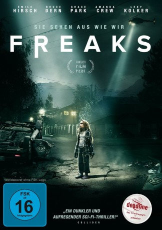
Freaks - Sie sehen aus wie wir
Jahr: 2018 Dauer: 105
FSK: 16 Auflösung: 1080p
Genre: Thriller IMDB: 6.7/10
Freaks - Sie sehen aus wie wir
Jahr: 2018 Dauer: 105
FSK: 16 Auflösung: 1080p
Genre: Thriller IMDB: 6.7/10

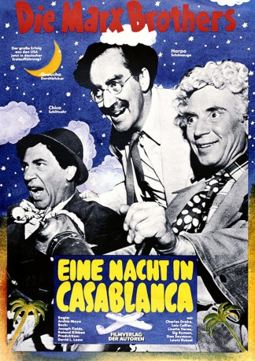
Eine Marx Brothers - Nacht in Casablanca
Jahr: 1946 Dauer: 84
FSK: 6 Auflösung: 1080p
Genre: Komödie IMDB: 7.0/10
Eine Marx Brothers - Nacht in Casablanca
Jahr: 1946 Dauer: 84
FSK: 6 Auflösung: 1080p
Genre: Komödie IMDB: 7.0/10
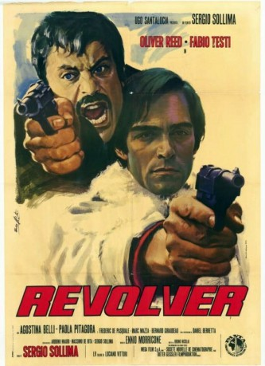
Die Perfekte Erpressung
Jahr: 1973 Dauer: 109
FSK: 16 Auflösung: 1080p
Genre: Thriller IMDB: 7.1/10
Die Perfekte Erpressung
Jahr: 1973 Dauer: 109
FSK: 16 Auflösung: 1080p
Genre: Thriller IMDB: 7.1/10
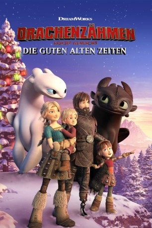
Drachenzähmen leicht gemacht: Die guten alten Zeiten
Jahr: 2019 Dauer: 21
FSK: 6 Auflösung: 1080p
Genre: Action IMDB: 7.3/10
Drachenzähmen leicht gemacht: Die guten alten Zeiten
Jahr: 2019 Dauer: 21
FSK: 6 Auflösung: 1080p
Genre: Action IMDB: 7.3/10


Cinderella Story: Ein Weihnachtswunsch
Jahr: 2019 Dauer: 86
FSK: 0 Auflösung: 1080p
Genre: Musik IMDB: 5.1/10

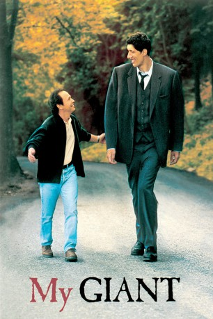
My Giant - Zwei auf großem Fuß
Jahr: 1998 Dauer: 99
FSK: Auflösung: 1080p
Genre: Drama IMDB: 5.0/10
My Giant - Zwei auf großem Fuß
Jahr: 1998 Dauer: 99
FSK: Auflösung: 1080p
Genre: Drama IMDB: 5.0/10
Der Unverhoffte Charme des Geldes
Jahr: 2018 Dauer: 122
FSK: 12 Auflösung: 1080p
Genre: Komödie IMDB: 7.0/10